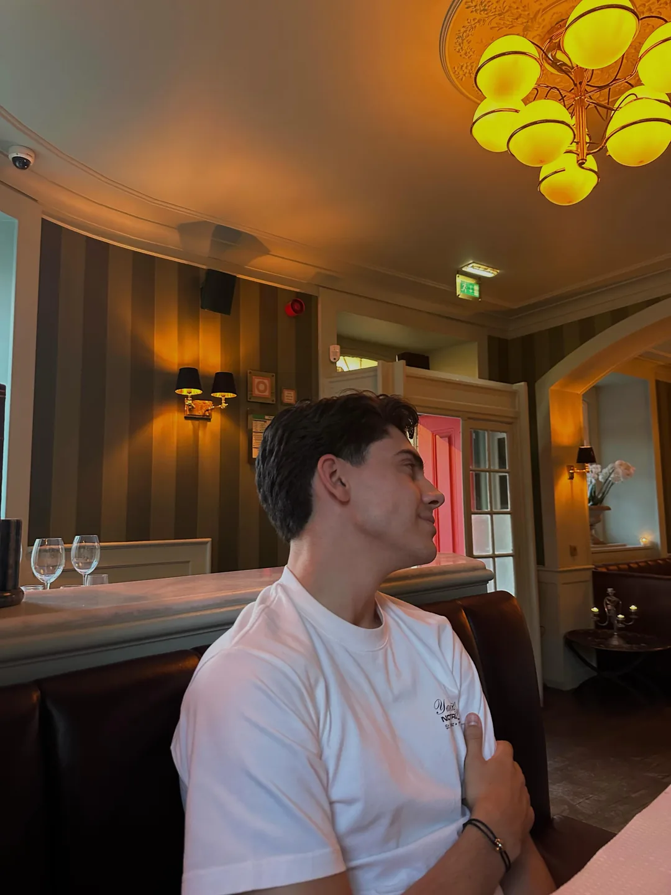
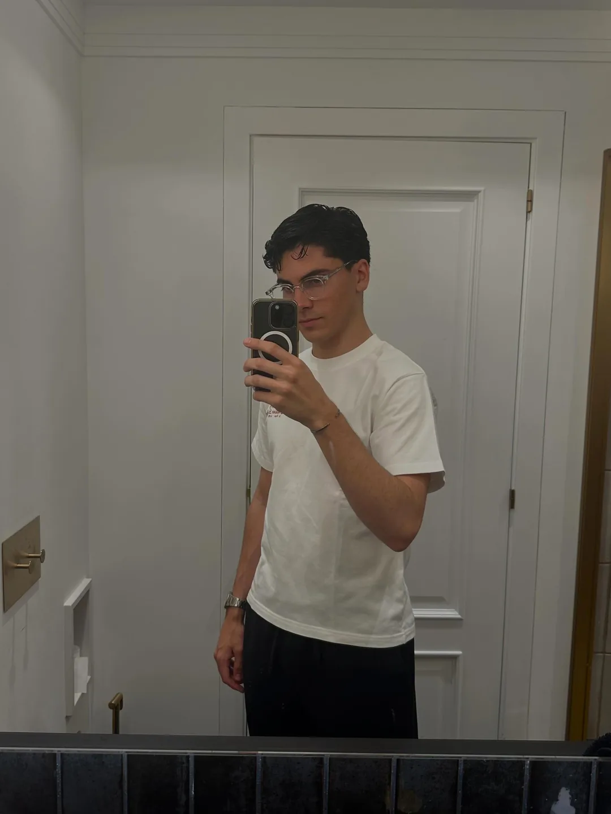
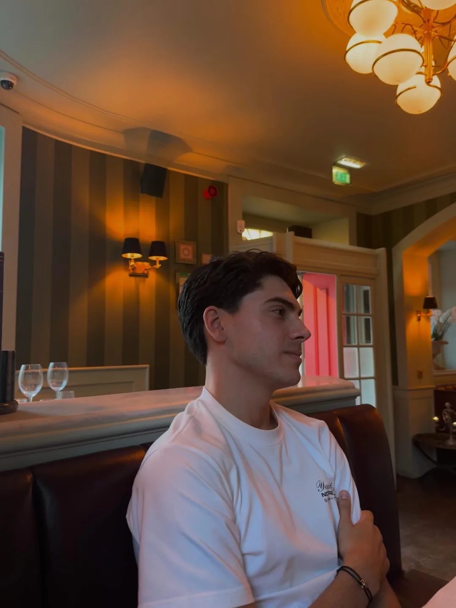
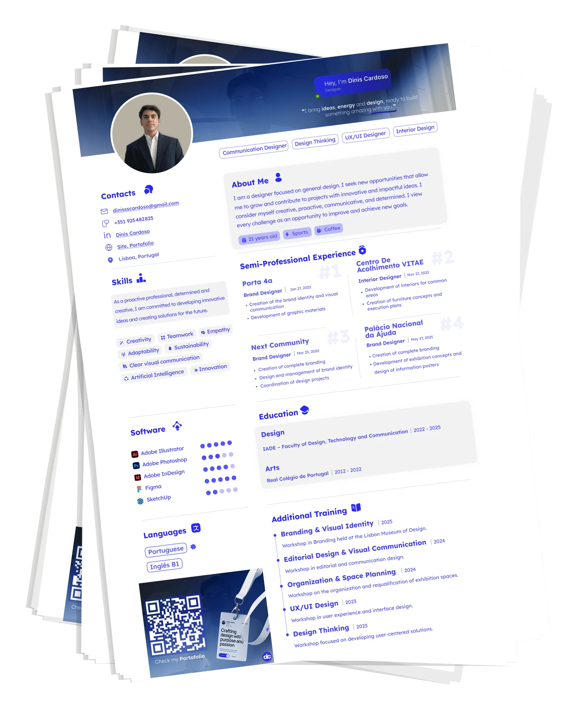

Brand Design
I create visual identities that reflect a brand’s essence and values. From logos to complete systems, I build cohesive designs that strengthen recognition and connection.
I bring ideas, energy and design, ready to build something amazing with you.
Located in Lisbon, available worldwide.
Check out some of my favorite projects — from brand identities to interfaces and interiors.
Discover how my work helps shape and elevate your vision.
I create visual identities that reflect a brand’s essence and values. From logos to complete systems, I build cohesive designs that strengthen recognition and connection.
I design intuitive digital experiences focused on clarity and usability. My process blends research, structure, and aesthetics to deliver functional and engaging interfaces.
I apply a human-centered approach to problem-solving, combining empathy, creativity, and strategy to generate innovative and practical design solutions.
I develop visual compositions that communicate messages with impact and clarity, using layout, typography, and imagery to enhance storytelling and brand expression.
I explore the relationship between space, form, and function, creating environments that balance aesthetics, comfort, and purpose through thoughtful design concepts.







I’m Dinis, a designer based in Lisbon. I work across brand identity, UX/UI, graphic and interior design — looking for the balance between purpose, clarity and passion.
See how my design process turns software into powerful results.
See how each project and collaboration during my studies contributed to my design vision.
Education, skills and languages — everything in one place.

View full CVI am a designer focused on general design. I seek new opportunities that allow me to grow and contribute to projects with innovative and impactful ideas. I consider myself creative, proactive, communicative, and determined. I view every challenge as an opportunity to improve and achieve new goals.
Have a project in mind? Let’s chat — I’m available for work in Lisbon and worldwide.